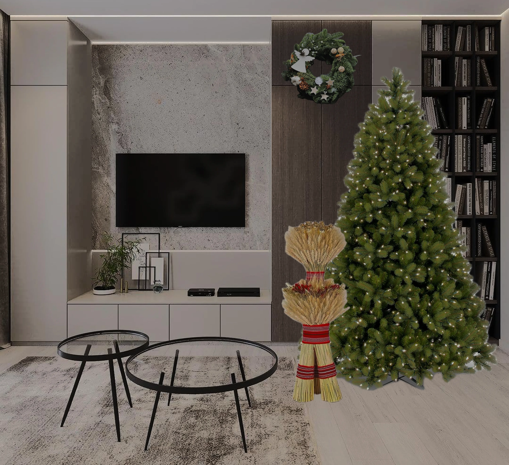
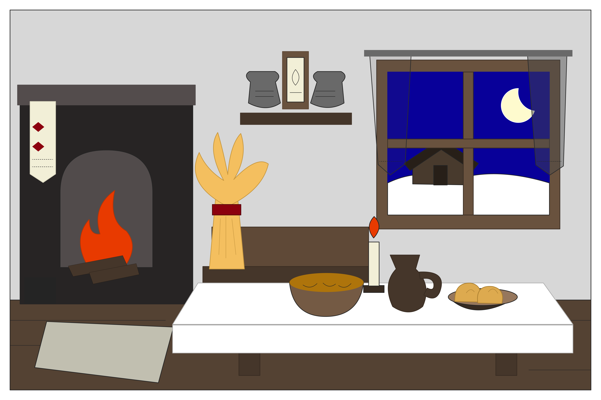
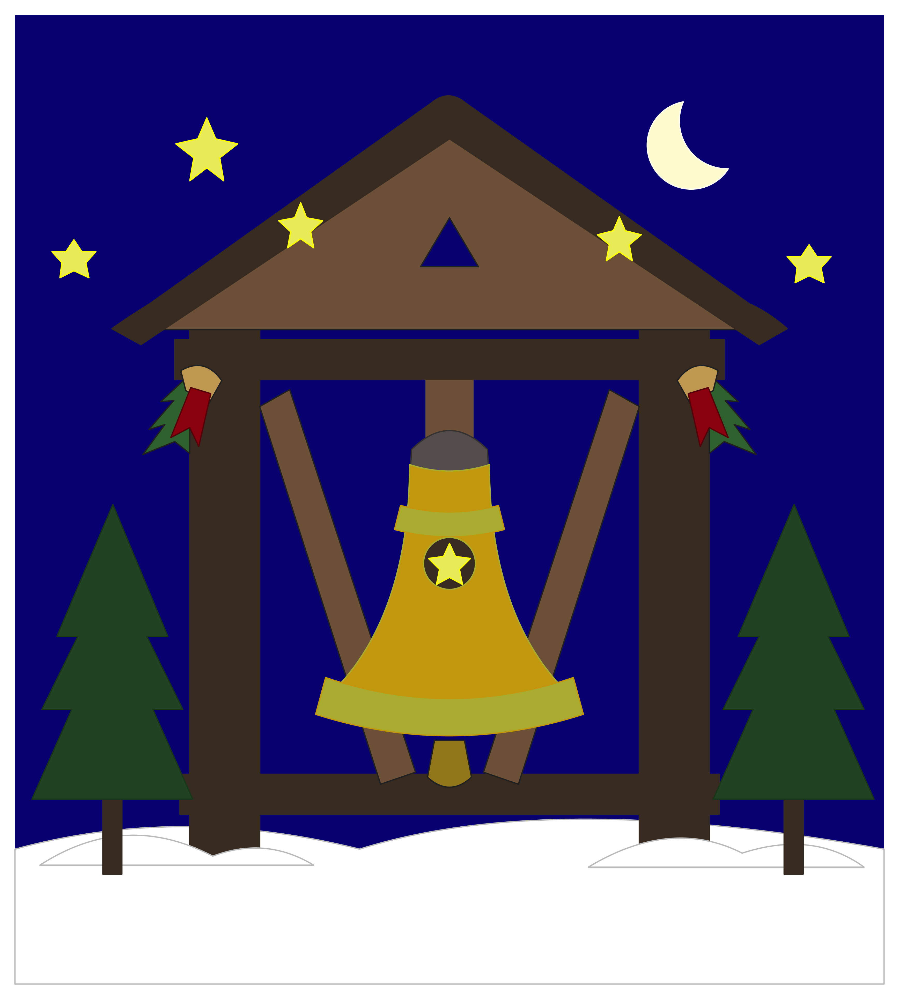

Святвечір на Вінниччині
Святвечір - це вечір напередодні Різдва Христового, який посідає особливе місце в українських родинних традиціях. Він символізує очікування великого свята, духовне єднання та тепло домашнього затишку.
На Вінниччині, як і в інших регіонах України, Святвечір пов'язаний із підготовкою оселі, приготуванням святкової вечері, родинною молитвою та збереженням давніх народних звичаїв.
Підготовка оселі до Святвечора
Перед Різдвом родини прибирають і прикрашають свої оселі, готуючись до святкової вечері та зустрічі близьких. Особливу увагу приділяють створенню затишної атмосфери.
Одним із традиційних символів українського Різдва є дідух — сніп із колосків, який уособлює достаток, врожай і пам'ять про предків.
У сучасних оселях Вінниччини дідух може стояти поруч із прикрашеною ялинкою. Так поєднуються давні українські звичаї та сучасні різдвяні традиції.

Традиційний Святвечір на Поділлі
У минулому підготовка до Святвечора була важливою подією для всієї родини. У хаті наводили лад, готували пісні страви, а на почесному місці встановлювали дідуха.
За поширеним звичаєм святкову вечерю розпочинали після появи першої зірки на небі. Родина збиралася за столом, де головне місце посідала кутя.
Палаюча свічка, домашнє тепло та спільна вечеря створювали особливу атмосферу. Святвечір був часом вдячності, спокою та єдності поколінь.

Різдвяний передзвін
Церковні дзвони є важливою частиною християнських свят. Їхній передзвін сповіщає вірянам про богослужіння та нагадує про радість народження Ісуса Христа.
На Вінниччині різдвяні богослужіння об'єднують парафіян у спільній молитві. Для багатьох родин відвідування церкви є важливою частиною святкування Різдва.
Дзвін символічно завершує тихе очікування Святвечора та сповіщає про настання світлого різдвяного свята.

Святвечір - час родинного тепла
Святвечір на Вінниччині поєднує духовність, народні традиції та родинну любов. Незалежно від того, як змінюється святкове оформлення осель, головними залишаються щирість, гостинність, пам'ять про предків і радість бути разом.